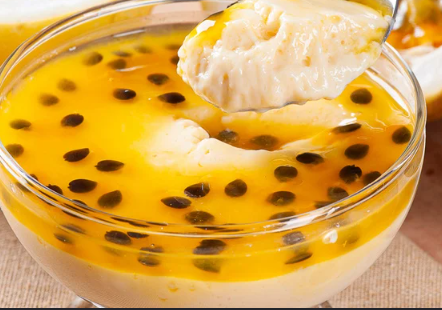

Culinária
A receita do Mousse de Maracujá perfeito

Ingredientes:
- 1 lata de leite condensado
- 1 caixa de creme de leite
- 1 xícara de suco concentrado de maracujá (puro)
- Sementes de maracujá para decorar (opcional)
Modo de Preparo:
- No liquidificador, adicione o leite condensado e o creme de leite. Bata por 1 minuto.
- Com o liquidificador ainda ligado, despeje o suco de maracujá aos poucos. Você vai notar a mágica acontecer: a mistura vai engrossar na hora!
- Despeje em um refratário ou tacinhas e leve à geladeira por no mínimo 4 horas. Decore com a polpa antes de servir.